Home / All Latest Viral Prompts Copy-Paste in One Click
All Latest Viral Prompts Copy-Paste in One Click
By Prompt Library•23 September 2026
If you are looking for all latest viral prompts copy-paste in one click, you are at the right place. AI photo editing is becoming more popular every day, and new viral photo trends are continuously appearing on Instagram, YouTube Shorts, and other social media platforms. With the right AI prompt, you can transform your normal photo into a creative, cinematic, aesthetic, or trending image within a few seconds. In this post, you can find the latest AI photo editing prompts that are easy to copy, paste, and use with your favorite AI image generator.
Create a refined, minimalist editorial-style paper cover illustration based on the uploaded photo. Reimagine the subject as a delicate, handcrafted artwork while ensuring the person remains clearly identifiable. Do not redesign, beautify, or alter the person's facial identity, pose, body proportions, hairstyle, clothing, or key visual features — these must stay true to the original photo.
**Composition:**
Place the entire subject precisely at the center of the canvas — roughly 50% from the left and 50% from the top. Maintain even, breathable space on all four sides, particularly above and below the figure. The subject itself should occupy only about 30–40% of the total frame, giving the piece a light, airy, spacious feel.
**Art Style:**
Go for a handmade, contemporary art-book look — think loose, imperfect line work, flat simplified painted shapes, soft acrylic-style brush texture, slightly irregular edges, and organic handcrafted marks. The backdrop should feel like warm, textured off-white paper — clean, serene, with plenty of negative space around the subject.
**Color Palette:**
Restrict the palette to a maximum of four soft, muted tones, drawn naturally from the colors present in the original photo.
**Mood:**
The overall feel should be calm, artistic, poetic, refined, and premium — similar to the cover of an independent design magazine or contemporary art book. Steer clear of heavy decoration, gradients, photorealism, strong shadows, cluttered elements, or unnecessary graphic additions. The composition should stay visually minimal and well-balanced throughout.
**Typography:**
Near the bottom of the illustrated figure, add elegant, handwritten-style lettering that reads exactly:
"Priya & Pankaj" ♡
The word "Cutie" should be black, stylish, and delicately blended into the artwork, followed by a small red heart symbol. Keep the text subtle and tasteful — it should complement the illustration, not dominate it.
**Final Output:**
A clean, premium, minimalist paper-cover style artwork — vertically balanced, centrally placed subject, warm paper texture, handcrafted illustration feel, sophisticated editorial design. No watermark, no extra text beyond what's specified.
Viral AI photo editing prompts make it easier to create trending images without spending hours editing manually. You can use these prompts with AI tools to create different styles such as cinematic portraits, aesthetic photos, nature backgrounds, festival edits, realistic photography, fashion looks, and creative Instagram trends. Simply choose the prompt you like, copy it with one click, upload your photo, and paste the prompt into your AI image generator to create your edited image.
Copy-Paste Viral Prompts in One Click
The main purpose of this collection is to make AI photo editing simple for everyone. Instead of manually selecting and copying a long prompt, you can use a Copy Prompt button and copy the complete prompt instantly. After copying the prompt, open your preferred AI image editing tool, upload your original image, paste the prompt, and generate the result. This simple process is especially useful for beginners who want to try the latest viral AI photo trends quickly.
Download This Background
? AI PROMPT
Place this person in the second photo in a realistic manner and adjust them to match the second photo; do not change anything else. Keep the background exactly as it is-do not alter it at all-and do not change the face or body size.
Enhance the image to 8K quality and set the aspect ratio to 3:4.
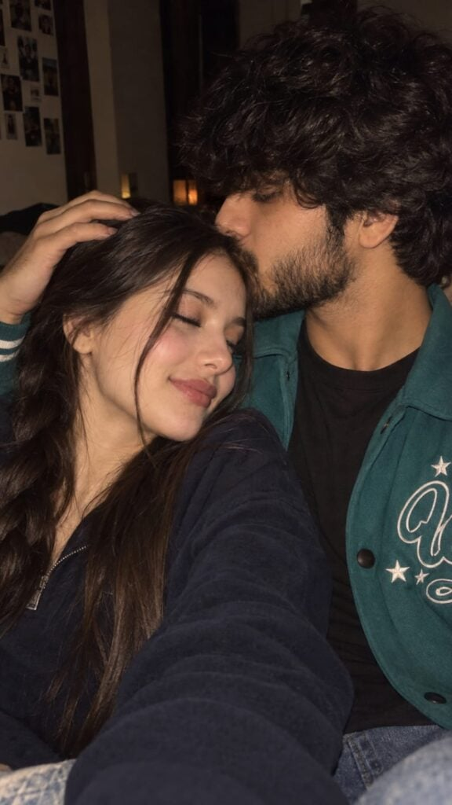
? AI PROMPT
Photorealistic romantic close-up selfie of a young couple cuddling cheek-to-cheek in a dimly lit room. The handsome young man has thick, slightly messy black hair, a well-groomed full beard and light mustache, natural skin texture, and a soft affectionate expression while gently kissing the woman’s forehead. The woman has long, straight dark-brown hair falling naturally around her face, soft glowing skin, subtle makeup, closed eyes, glossy natural lips, and a peaceful romantic smile. She is resting comfortably against him while his hand gently rests on her head. Warm low-light flash photography, realistic skin texture, natural facial features, intimate candid feeling, soft shadows, subtle background blur, cinematic warm tones, authentic smartphone-camera look, no excessive retouching, no artificial AI appearance, vertical 9:16 composition.
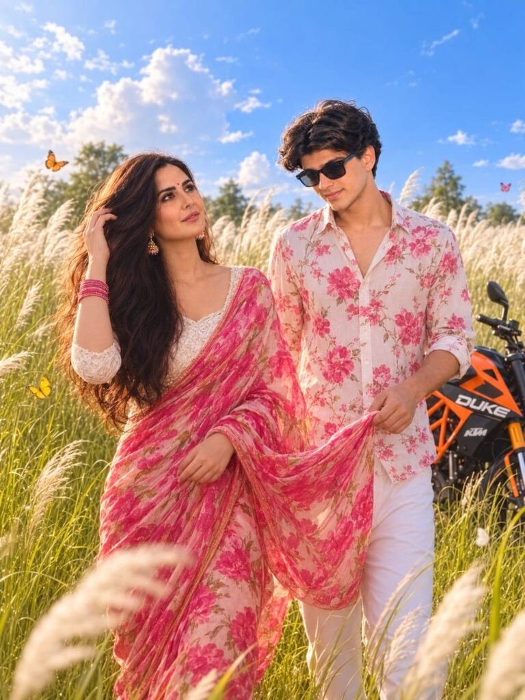
? AI PROMPT
Create a cinematic 8K DSLR photograph in a portrait composition of a romantic young Indian couple walking through a beautiful field of tall white Kans grass. The young man wears a stylish white shirt with vibrant pink floral prints and white trousers, looking lovingly at the woman while gently holding the flowing end of her saree. The beautiful young woman wears a bright pink floral saree with an elegant white blouse, traditional jhumka,pink bangles,and long wavy black hair flowing naturally in the breeze. She smiles softly while gracefully touching her hair. An orange KTM Duke bike is parked behind them among the grass. Colorful butterflies flutter around the couple, while soft Kans grass creates a dreamy foreground and background. Bright natural daylight, cinematic lighting, realistic skin texture, detailed fabric, natural hair movement, shallow depth of field, foreground bokeh, vibrant natural colors, romantic storytelling, photorealistic and highly detailed.
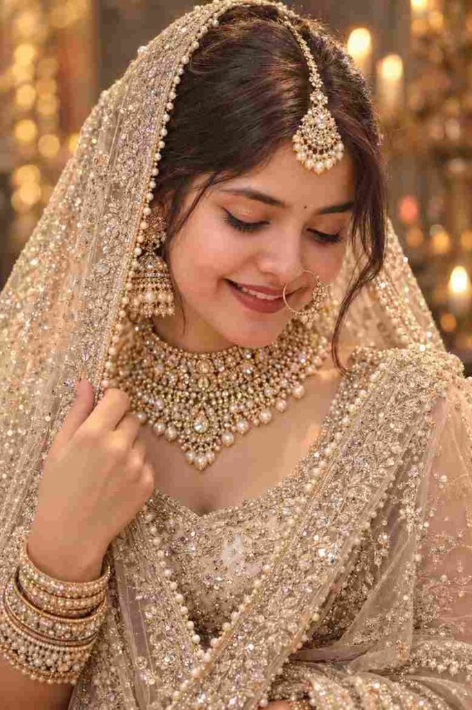
? AI PROMPT
Create an ultra-realistic cinematic close-up portrait of a beautiful South Asian bride wearing an elegant champagne-gold and ivory heavily embellished bridal lehenga. She is draped in a luxurious sheer glittering dupatta over her head and shoulder, decorated with intricate sequin, crystal, and pearl embroidery with a delicate pearl border.
She is wearing luxurious traditional Indian bridal jewelry, including a large pearl-and-gold maang tikka, oversized intricate jhumka earrings, a heavily detailed layered gold-and-pearl choker necklace, and a delicate large gold nath with pearl embellishments. Add elegant stacked bridal bangles.
Her makeup is soft glam bridal makeup with glowing dewy skin, warm peach-pink blush, champagne-gold shimmer eyeshadow, dramatic black winged eyeliner, long natural lashes, neatly defined eyebrows, and muted rose-red lipstick. Her dark hair is sleek and elegantly styled beneath the veil, with a few soft strands naturally framing her face.
Pose: intimate close-up three-quarter portrait, face slightly turned downward and toward the camera, eyes gently closed, serene and graceful expression, one hand delicately holding the edge of the sparkling dupatta near her shoulder.
Lighting: warm golden cinematic lighting, soft diffused glow across the face, subtle candle-like bokeh lights in the background, dreamy luxurious wedding atmosphere, beautiful highlights reflecting from the jewelry and sequins, shallow depth of field.
Style: photorealistic high-end Indian bridal editorial photography, natural facial features, realistic skin texture, highly detailed jewelry and embroidery, realistic fabric texture, cinematic composition, 85mm portrait lens, creamy background bokeh, professional studio photography, soft warm tones, ultra-detailed, 8K quality.
No text, no captions, no watermark, no logos, no UI elements.
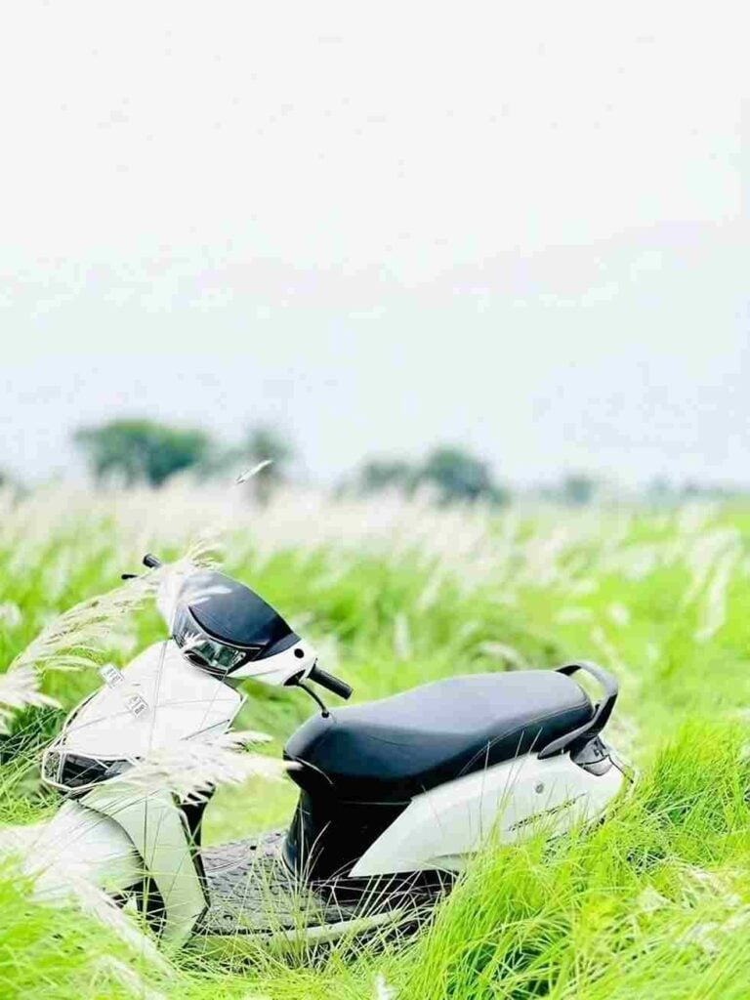
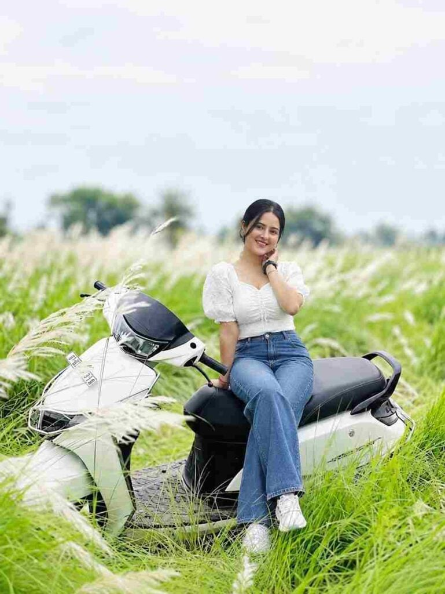
? AI PROMPT
A young girl sitting on a black scooter in the middle of a fall white grass field during daytime. She is wearing a white top and blue jeans, smiling gently at the camera. Natural outdoor lighting, realistic photography style, blurry green nature background
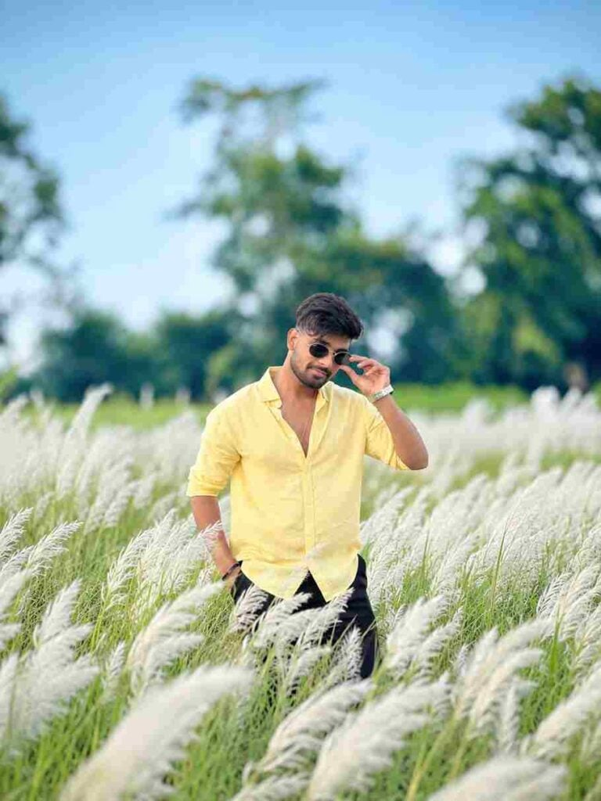
? AI PROMPT
Use the uploaded photo as the only identity reference and place the person naturally into a beautiful white Kashful (Kans grass) field like the reference background. Preserve the exact face, facial features, skin tone, hairstyle, body proportions, clothing, pose, hand position, and natural expression without any changes. Make the person appear slightly distant and naturally surrounded by tall white Kash flowers. Match the original background’s soft daylight, bright blue sky, green vegetation, shallow depth of field, realistic perspective, shadows, lighting, colors, and camera quality. Create a highly realistic DSLR photograph.
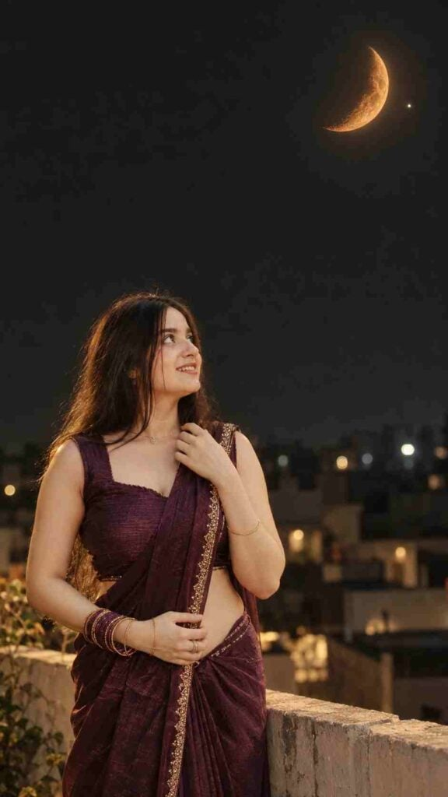
? AI PROMPT
Use the uploaded girl photo as the ONLY exact identity reference. 100% STRICT FACE LOCK: unchanged face, features, skin tone/texture, hair and hairstyle; no beautification or face modification.
Create an ultra-realistic cinematic 9:16 night rooftop portrait. Same girl in her exact original dark-purple traditional outfit with all embroidery, jewelry and dupatta details unchanged, standing lower-left/center and peacefully looking upward in natural side/3/4 profile.
Recreate the exact uploaded moon reference: glowing orange crescent, same shape/orientation, realistic craters, warm glow and one bright point beside it, sharp in the upper-right sky. Dark open sky, subtle rooftop/parapet, distant blurred lights.
Natural moonlight + subtle warm rim light, realistic skin/hair/fabric, DSLR 85mm, shallow DOF, cinematic HDR, natural bokeh, photorealistic 4K/8K.
Negative: face/identity change, beautification, altered outfit/hair, duplicate moon/stars, distorted moon, extra people/limbs/fingers, CGI/cartoon, excessive glow, overexposure, blur, text, watermark.
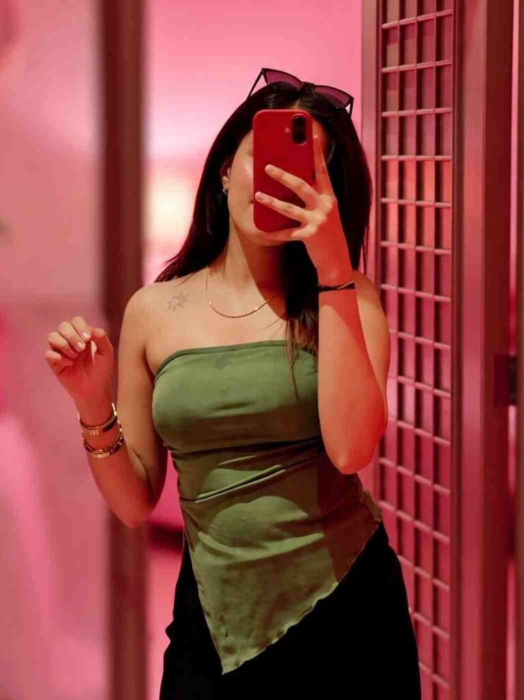
? AI PROMPT
Enhance this image with asthetic pink blur background Soft lighting +indoor asthetic room with dim lighting + no changes in facial features + clear and good
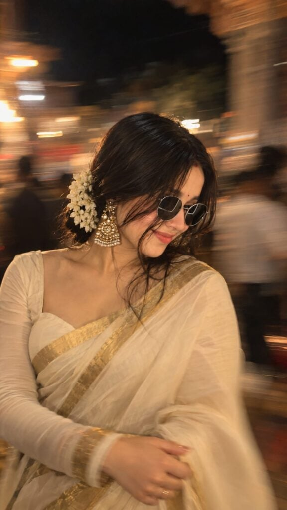
? AI PROMPT
Without changing original face create an Intentional artistic motion-blur portrait, shot on a smartphone or long-exposure camera. Not so extreme close-up of a woman with a loose braided low bun and add jasmine flowers around her bun and a long face-framing strand covering half her face. She's wearing a onam saree with a matching full sleeve blouse with a sweetheart neck. Don't show the Cleavage. Looking down and to the side, one eye mostly hidden, lips slightly parted. Large statement gold earrings, bare shoulders, smooth glowing skin, soft peach blush, subtle highlighter, delicate makeup, defined lashes, matte dusty-rose lips with darker liner.Aspect ratio 9:16. The image should look very natural and the quality should be 4k.
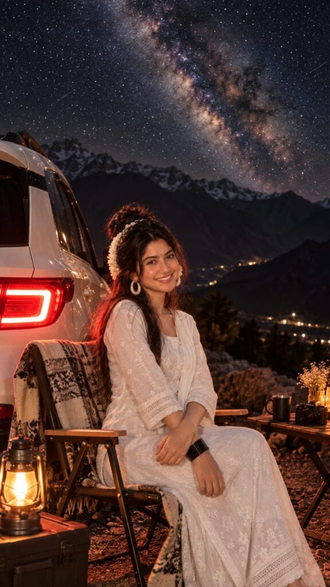
? AI PROMPT
Transform my uploaded photo into an ultra-realistic cinematic nighttime mountain scene.
STRICT IDENTITY & OUTFIT LOCK:
Keep the person's face, facial features, skin texture, hairstyle, hair accessories, body shape, proportions, pose, hands, jewelry, and white embroidered traditional outfit exactly consistent with the original photo. Do not change the person's identity or make the face look AI-generated. Preserve natural anatomy and realistic clothing texture.
SCENE:
Place the person naturally seated in an elegant rustic folding camping chair beside a clean white SUV. The chair should look premium, realistic, properly proportioned, and naturally positioned beneath the person. Add a soft patterned wool blanket draped naturally over the chair for a cozy mountain-camping aesthetic.
Keep the white SUV clearly visible beside her, with realistic reflections and detailed bodywork. Its red taillights should create dramatic but physically realistic red illumination across the woman's outfit, hair, SUV, chair, and rocky ground.
BACKGROUND:
Create a dark, rugged mountain range with realistic depth and atmospheric haze. Add distant warm mountain-town lights in the valley. Fill the night sky with a highly detailed Milky Way galaxy and thousands of realistic stars. The Milky Way should look naturally photographed, not artificially pasted.
ATMOSPHERE & DETAILS:
Create a beautiful luxury mountain campsite mood. Add subtle warm lantern lighting around the chair and ground, realistic shadows, natural reflections, soft rim lighting around the woman's hair, and cinematic low-light exposure. The rocky ground should have realistic stones, texture, and red taillight reflections.
Add a small rustic wooden camping side table near the chair with a warm lantern and a simple coffee mug, keeping the composition elegant and uncluttered.
PHOTOGRAPHY:
Ultra-realistic professional DSLR photography, full-frame camera look, 50mm lens, natural depth of field, sharp subject, realistic skin pores and texture, physically accurate lighting, subtle cinematic contrast, rich but natural colors, atmospheric depth, realistic night exposure, detailed fabric texture, realistic shadows and highlights, premium travel-editorial photography.
COMPOSITION:
Vertical 9:16 portrait composition. Keep the person as the main subject, naturally seated and relaxed, with the SUV, chair, mountains, and Milky Way balanced beautifully around her.
NEGATIVE:
No face alteration, no identity change, no artificial-looking skin, no beauty-filter effect, no distorted hands, no extra fingers, no extra limbs, no deformed body, no warped clothing, no unrealistic chair, no floating objects, no excessive blur, no oversaturated colors, no fake-looking stars, no cartoon effect, no CGI appearance, no text, no logo, no watermark.
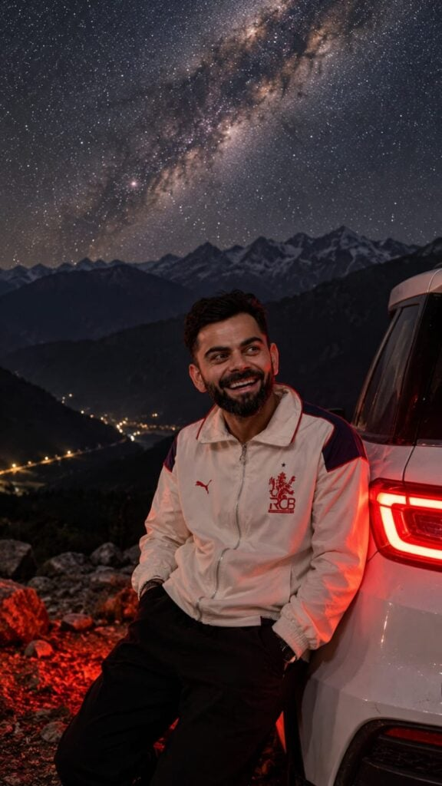
? AI PROMPT
Transform my photo into a realistic cinematic night-time mountain scene. Keep the person's face, hairstyle, body, and outfit exactly the same as in the original photo. Place the person naturally leaning/sitting against a white SUV, with a dark rugged mountain range in the background. Add a highly detailed Milky Way galaxy and dense realistic stars across the night sky. Create dramatic red taillight illumination falling naturally on the car, person, and rocky ground, with realistic shadows and highlights. Keep the person's proportions and clothing completely natural. Photorealistic DSLR photography, realistic skin texture, sharp subject, atmospheric depth, subtle cinematic contrast, low-light photography, natural reflections, ultra-detailed, vertical 9:16 composition. No text, no watermark, no artificial-looking face, no distortion.
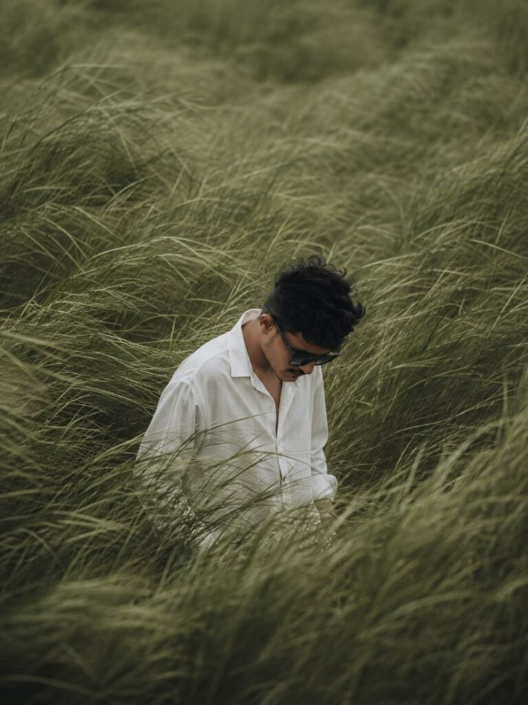
? AI PROMPT
CREATE A 4:5 CINEMATIC, ATMOSPHERIC EDITORIAL PORTRAIT USING THE ATTACHED PHOTO AS THE EXACT FACE AND IDENTITY REFERENCE. A SOLITARY, MAN STANDS AFONE IN THE MIDDLE OF VAST, WIND-SWEPT SAGE GREEN GRASS FIELDS, TALL GRASS SURROUNDS THE SUBJECT COMPLETELY, FLOWING IN STRENG SURRENTS LIKE OCEAN WAVES, PARTIALLY OBSCURING THE BODY AND CREATING MOTION, DEPTH, AND SOLITUDE. THE SUBJECT WEARS A SIMPLE, LOOSE WHITE SHIRT THAT SOFTLY CONTRASTS WITH THE RICH GREEN LANDSCAPE.
DARK HAIR IS SLIGHTLY MESSY, WITH NATURAL STRANDS MOVING IN THE WIND. THE HEAD IS GENTL TILTED DOWNWARD, EVES CAST TOWARD THE GROUND, CONVEYING A QUIET, INTROSPECTIVE, MELANCHOLIC MOOD.
EXPRESSION IS CALM, DISTANT, AND EMOTIONALLY RESTRAINED. COMPOSE THE FRAME SLIGHTLY OFF-CENTER, FROM A SUBTLE ELEVATED ANGLE. NO VISIBLE HORIZON, THE FRAME IS FULLY IMMERSED IN GRASS TEXTURE.
SUSE A MUTED NATURAL PALETTE OF SAGE GREEN, DEEP OLIVE, AND SOFT OFF-WHITE. SHOOT VERTICAL 3:4, TELEPHOTO PERSPECTIVE, SHALLOW DEPTH OF FIELD, CINEM
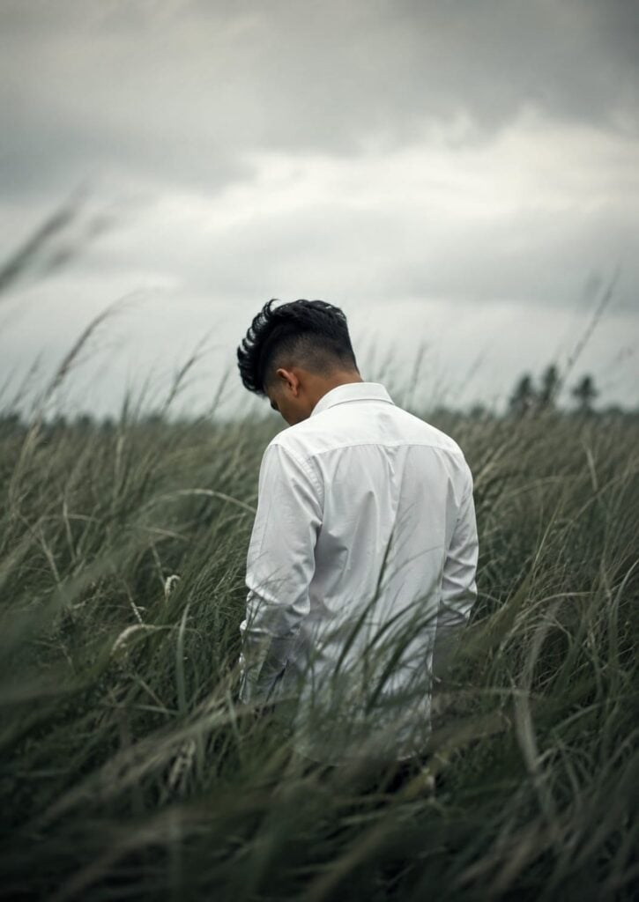
? AI PROMPT
A medium-long shot of a person with short dark hair, seen from behind and slightly angled to the left, standing in the center of the frame amidst a field of tall, windswept wild grass. The individual has a slender build and is wearing a crisp, long-sleeved white button-down shirt. Their head is bowed forward, suggesting a melancholic or introspective mood. The tall, textured green grasses surround the subject, partially obscuring the lower half of their body and creating a sense of isolation within nature. The lighting is soft and muted, casting gentle shadows and enhancing the cool, desaturated green tones of the environment. The composition features a shallow depth of field, with the edges of the frame showing a subtle motion blur, focusing all attention on the solitary figure. The overall atmosphere is pensive, quiet, and contemplative, captured with a cinematic, slightly moody aesthetic that emphasizes solitude in a vast, natural landscape.
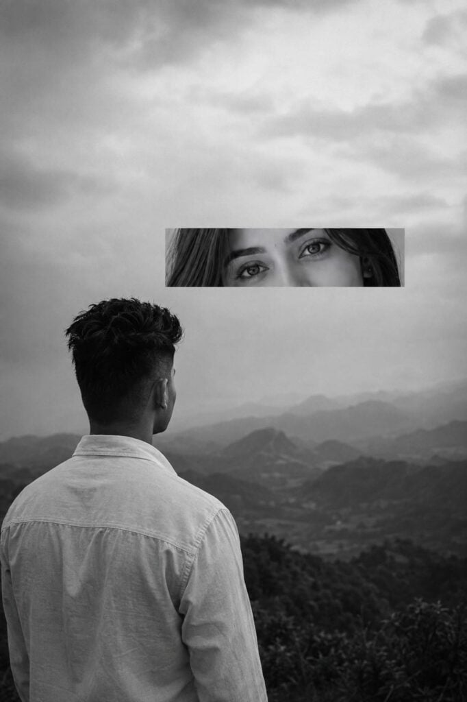
? AI PROMPT
A monochrome, surreal artistic composition featuring a young male seen from behind, positioned on the left side of the frame. He has short, dark hair and is wearing a light-colored, button-up collared shirt. He is looking out toward a mountainous, hazy landscape in the background. Suspended in the upper center of the frame is a horizontal, rectangular inset containing a close-up of a pair of human eyes with dark hair framing them, looking directly ahead with an intense, melancholic expression. The lighting is soft and diffuse, typical of an overcast day, creating a somber and moody atmosphere. The overall style is minimalist and conceptually layered, blending a wide landscape view with a fragmented portrait element. The contrast between the back of the man's head and the focused gaze in the inset creates a feeling of detachment and introspection. The color palette consists entirely of shades of gray, black, and white, emphasizing the textures of the shirt and the rugged, rolling terrain of the distant hills.
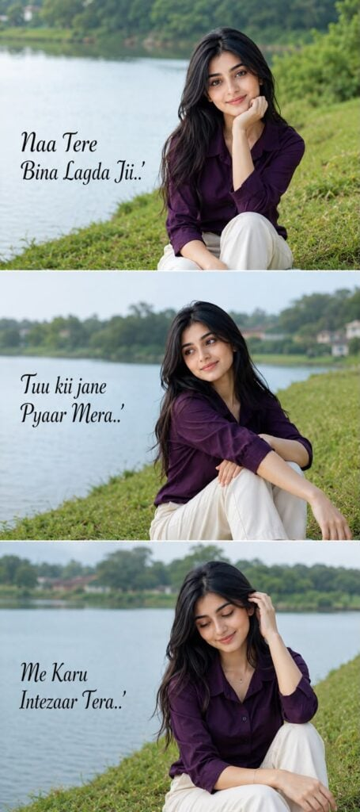
? AI PROMPT
Ultra-realistic 3-frame vertical collage of the same girl sitting on lush green grass beside a calm lakeside, wearing a dark purple shirt and cream pants. Same face and hairstyle, natural candid poses, soft daylight, DSLR quality, realistic colors.
Add the text:
Naa Tere Bina Lagda Jii..'
Tuu kii jane Pyaar Mera..'
Me Karu Intezaar Tera..'
on the three frames in elegant black font.
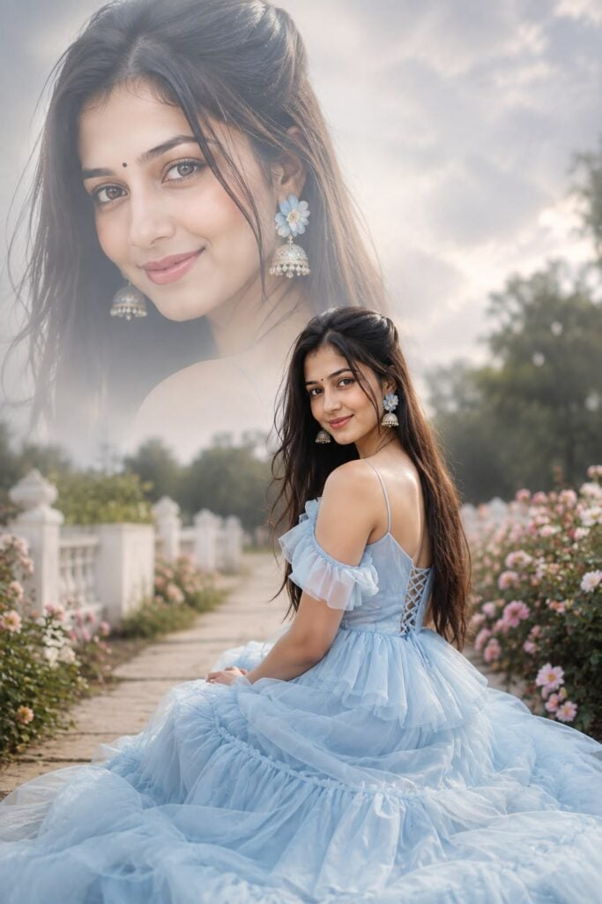
? AI PROMPT
eautiful young Indian woman, Ultra realistic, wearing a dreamy pastel blue layered princess gown, oversized floral jhumka earrings, tiny black bindi, long silky straight hair with half-up hairstyle, soft natural smile, sitting gracefully on an open garden pathway while looking back, giant faded close-up portrait blended in the cloudy bright background, pastel color grading, dreamy haze, cinematic soft lighting, shallow depth of field, premium fantasy portrait, DSLR photography, ultra realistic,
The answer is simple. They use photo editing prompts.
Today, AI tools like ChatGPT, Gemini, Grok, Midjourney, and many other image generators can create professional-looking photos in just a few seconds. All you need is the right prompt.
In this article, you will find everything about trending photo editing prompts. Whether you want a stylish portrait, a cinematic photo, a festival edit, or a viral social media picture, this guide has you covered.
What Are Photo Editing Prompts?
A photo editing prompt is simply a detailed text instruction that tells an AI exactly how to edit or generate an image.
Instead of spending hours editing in Photoshop, you can describe the photo you want, and AI creates it for you.
For example:
Change the background
Improve lighting
Add cinematic effects
Change clothes
Create a fantasy scene
Add realistic shadows
Make DSLR-style portraits
Generate ultra HD images
The better your prompt is, the better your final image will be.
Why Are AI Photo Editing Prompts So Popular?
AI has made photo editing much easier than ever.
Here are some reasons why millions of people are using AI prompts every day.
No editing skills required
Saves a lot of time
Creates professional-quality images
Perfect for Instagram and social media
Works in seconds
Easy for beginners
Unlimited creative possibilities
Most Trending Photo Editing Prompt Categories
Below are the most popular AI photo editing styles people are searching for.
1. Cinematic Portrait Prompts
These prompts create dramatic lighting, beautiful colors, soft depth of field, and movie-style portraits.
Perfect for:
Instagram DP
Profile picture
Portfolio
Wallpapers
2. Couple Photo Editing Prompts
Couple prompts are becoming extremely popular.
These prompts can create:
Romantic portraits
Rain scenes
Beach photos
Sunset backgrounds
Traditional outfits
Wedding-style edits
3. Festival AI Prompts
Festival prompts are always trending in India.
Popular festivals include:
Independence Day
Diwali
Holi
Raksha Bandhan
Janmashtami
Ganesh Chaturthi
Navratri
Eid
Christmas
New Year
4. Travel Photo Prompts
Want amazing travel photos without visiting expensive locations?
AI can generate beautiful travel scenes like:
Mountains
Beaches
Snowfall
Forests
Waterfalls
Europe streets
Desert landscapes
Luxury resorts
5. Fantasy AI Prompts
Fantasy prompts create magical worlds with realistic details.
Popular ideas include:
Dragon scenes
Giant moon
Angel wings
Floating islands
Mythological characters
Futuristic cities
6. Traditional Indian Prompts
These prompts create elegant Indian portraits with traditional outfits.
Popular choices include:
Saree photos
Kurta portraits
Royal palace backgrounds
Temple photography
Ethnic fashion
Wedding edits
7. Viral Instagram Photo Prompts
Social media users love these editing styles.
Trending ideas include:
Luxury lifestyle
Moody portraits
Neon lighting
Street photography
DSLR look
Soft aesthetic
Fashion editorials
Luxury car backgrounds
Best AI Tools for Photo Editing Prompts
Many AI tools support detailed prompts.
Some of the best options are:
ChatGPT
Google Gemini
Grok AI
Midjourney
Flux AI
Ideogram AI
Leonardo AI
Recraft AI
Bing Image Creator
Each tool has its own strengths, but all of them can create impressive images when you provide a good prompt.
Tips to Write Better Photo Editing Prompts
A detailed prompt usually produces better results.
Try including information like:
Camera angle
Lighting
Background
Outfit
Pose
Facial expression
Weather
Colors
Lens type
Aspect ratio
Image quality
Photography style
The more specific you are, the more realistic the final image becomes.
Example Prompt
Here’s a simple example:
A realistic cinematic portrait of a young man standing on a mountain during golden hour, wearing a black jacket, soft warm sunlight, dramatic clouds, shallow depth of field, DSLR photography, ultra detailed skin texture, 85mm lens, HDR, natural colors, highly realistic, 8K quality.
You can customize this prompt by changing the location, clothing, lighting, or camera settings.
How to Use These Prompts
Using AI prompts is very easy.
Open your favorite AI image generator.
Copy the prompt.
Paste it into the prompt box.
Upload your photo if the tool supports image editing.
Generate the image.
Download your favorite result.
Many creators also generate multiple versions before choosing the best one.
Who Can Use These Prompts?
Anyone can use AI photo editing prompts.
They are especially useful for:
Content creators
Instagram users
Bloggers
YouTubers
Designers
Students
Small business owners
Photographers
Digital artists
Frequently Asked Questions
Are AI photo editing prompts free?
Yes. Many AI tools allow you to use prompts for free, although some advanced features may require a premium plan.
Which AI tool gives the best photo quality?
ChatGPT, Gemini, Midjourney, and Flux AI currently produce some of the highest-quality AI images.
Can beginners use photo editing prompts?
Absolutely. You don’t need any editing experience. Just copy a prompt and let the AI do the work.
Can I edit my own photo with AI?
Yes. Many AI platforms let you upload your photo and transform it using detailed prompts while preserving your face.
Final Thoughts
AI photo editing is changing the way people create images. What once required professional software and years of editing experience can now be done in just a few minutes with the right prompt.
Whether you want a cinematic portrait, a stylish Instagram post, a festival-themed photo, or a creative fantasy scene, using detailed prompts will help you get better results.
We regularly publish the latest and most trending AI photo editing prompts, so check back often to discover new styles, fresh ideas, and viral editing trends.